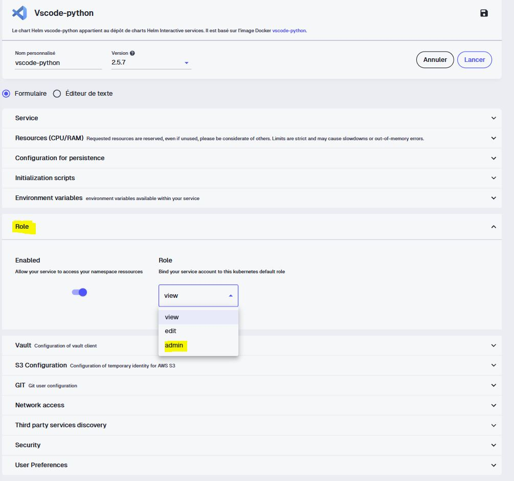

flowchart TD
DEV([Vous poussez du code]) --> APP[Dépôt applicatif]
APP -->|"la CI build l'image"| H[(Docker Hub)]
H -->|"met à jour le tag de l'image"| GITOPS[Dépôt GitOps]
GITOPS -->|"surveillé par"| ARGO[ArgoCD]
ARGO -->|"applique l'état désiré"| K[Cluster Kubernetes]
H -.->|"le cluster tire l'image"| K
K --> U([Application accessible])
Déployer les amarres
Comme pour
Docker, je ne vais pas vous apprendreKubernetesetArgoCDdans leur intégralité, ce sont des univers à part entière. Mon objectif est que vous sachiez vous en servir dans notre cas concret : déployer automatiquement notre application et la rendre accessible via une URL.
C’est quoi ArgoCD ?
ArgoCD est un opérateur de déploiement continu pour Kubernetes. Si vous connaissez Airflow, Dagster, Prefect ou Luigi pour orchestrer des pipelines de données, voyez ArgoCD comme un orchestrateur d’un autre genre : il orchestre le déploiement de composants (images Docker, charts Helm) sur un cluster Kubernetes.
C’est quoi Kubernetes ?
On ne peut pas parler d'ArgoCD sans que je vous parle un peu de Kube. Pas d’inquiétude, l’objectif n’est toujours pas de faire de vous des administrateurs Kubernetes mais de vous donner le vocabulaire minimal pour comprendre ce qu’ArgoCD manipule pour vous en secret.
Kubernetes (que vous retrouverez aussi sous l’abréviation k8s) est un orchestrateur de conteneurs1. Concrètement : vous lui décrivez l’état que vous voulez (“je veux trois exemplaires de mon application qui tournent, accessibles sur tel port”) et c’est lui qui se débrouille pour l’atteindre et le maintenir. Si un conteneur plante, il le redémarre. Si vous demandez plus d’exemplaires, il les crée. C’est cette idée d’état désiré que vous devez retenir.
Toute la communication avec Kubernetes se fait de manière déclarative : vous ne lui donnez pas une suite d’ordres (“crée ceci, puis lance cela”), vous lui décrivez le résultat voulu et il calcule lui-même les étapes pour y arriver. Ce résultat, vous l’écrivez dans des manifestes.
Le manifeste
Un manifeste est un fichier (en général au format YAML) qui décrit une ressource Kubernetes. C’est la brique de base de tout ce que vous ferez : chaque objet de votre cluster, du conteneur jusqu’au routage réseau est défini par un manifeste.
Un manifeste suit toujours la même structure de quatre champs principaux :
apiVersion: apps/v1 # la version de l'API concernée
kind: Deployment # le type de ressource décrite
metadata: # son identité (nom, namespace, labels)
name: medas-app
spec: # l'état désiré, le cœur du fichier
replicas: 3Le namespace
Un namespace est un espace de cloisonnement logique à l’intérieur du cluster. Si vous voulez une image pour visualiser tout ça, imaginez simplement un immeuble (le cluster) découpé en appartements (les namespaces) : chaque locataire a ses ressources chez lui, sans marcher sur celles du voisin.
Ils servent à :
- Isoler des projets ou des environnements les uns des autres (par exemple un namespace
staginget un namespaceproduction). - Organiser les ressources pour s’y retrouver quand le cluster grossit.
- Appliquer des règles par espace : quotas de ressources, droits d’accès, politiques réseau.
Sur un cluster mutualisé comme le SSP Cloud, vous travaillez dans votre propre namespace : c’est votre périmètre.
NoteQuelques notions supplémentaires
Au delà du namespace, voici les ressources Kubernetes les plus courantes.
- Pod : la plus petite unité déployable. C’est l’enveloppe qui fait tourner un (ou plusieurs) conteneur. Vous en créez rarement à la main : ce sont les ressources de plus haut niveau qui s’en chargent.
- Deployment : décrit l’état désiré pour une application (quelle image, combien d’exemplaires) et gère les Pods correspondants. C’est lui qui redémarre un Pod qui tombe ou qui orchestre une montée de version sans coupure.
- Service : donne un point d’accès réseau stable à un ensemble de Pods. Comme les Pods vont et viennent (et changent d’adresse), le Service offre une porte d’entrée fixe pour les joindre.
- Ingress : gère l’accès depuis l’extérieur du cluster, typiquement le routage HTTP/HTTPS vers le bon Service. C’est par lui que votre application devient accessible depuis un navigateur.
- ConfigMap et Secret : externalisent la configuration et les données sensibles (mots de passe, clés) hors de l’image, pour ne pas avoir à reconstruire votre conteneur à chaque changement de paramètre.
NoteLe principe GitOps
ArgoCD repose sur l’approche GitOps. L’idée tient en une phrase : un dépôt Git fait office de source de vérité unique de l’état voulu de l’application. Tout changement poussé sur ce dépôt doit se répercuter immédiatement sur le déploiement réel.
On ne modifie pas le cluster à la main : on décrit l’état souhaité dans Git et ArgoCD se charge de faire converger le cluster vers cet état. L’historique Git devient alors l’historique exact de ce qui tourne en production, ce qui est précieux pour l’audit et le retour arrière.
Le workflow : deux dépôts
C’est ici qu’intervient une nouveauté d’architecture. Jusqu’à présent, tout vivait dans un seul dépôt. Pour le déploiement GitOps, on en introduit un second, dédié au déploiement.
- Le dépôt applicatif (le nôtre,
MEDAS-Financial-Reporting) contient le code et laCIqui build et push l’image surDockerHub. - Le dépôt GitOps (que nous allons créer) contient uniquement les manifests Kubernetes : la description de comment notre application doit tourner sur le cluster.
ArgoCD surveille ce dépôt GitOps. Dès qu’un changement y est poussé, il met à jour le déploiement. C’est ça, le déploiement continu (CD).
TipPourquoi utiliser deux dépôts ?
On pourrait en effet être tenté de tout mettre dans un seul repo, en se disant que la séparation se fait “physiquement” via des dossiers au sein du dépôt. Cependant, si vous avez bien suivi depuis le début, la direction de la réponse devrait vous paraître familière : c’est une question de séparation des préoccupations (separation of concerns).
On serait tenté de parler de séparation des responsabilités, mais soyons précis : là où le principe de responsabilité unique (SRP) s’applique au code, nous reprenons ici la même intuition un cran au-dessus mais à l’échelle du dépôt.
Vous pourriez alors objecter : “Mais je viens justement de dire qu’on pouvait séparer avec des dossiers, alors pourquoi ne pas simplement créer un dossier deployment dans le repo du projet ?” La réponse tient en partie à une histoire de norme, mais surtout à un principe fondamental de GitOps2 : découpler le cycle de vie du code de celui du déploiement.
Concrètement, cela signifie que :
- Votre code applicatif peut évoluer (nouvelles fonctionnalités, corrections de bugs) sans nécessairement déclencher de redéploiement.
- Votre configuration de déploiement peut changer (montée de version, scaling, ajustement des ressources) sans toucher une seule ligne de code métier.
Cette séparation apporte plusieurs bénéfices très concrets :
- Un historique Git clair et dédié. Chaque dépôt raconte une seule histoire. Dans le repo applicatif, vous lisez l’évolution de la logique métier ; dans le repo de déploiement, vous lisez l’évolution de l’infrastructure. Plus besoin de fouiller dans un historique mélangé pour comprendre “qui a changé quoi et pourquoi”.
- Une gestion des droits plus fine. Les développeurs n’ont pas forcément à toucher à la configuration de production, et les personnes en charge de l’infrastructure n’ont pas à plonger dans le code applicatif. Chaque dépôt peut avoir ses propres règles d’accès et de revue.
- Pas de boucle de build infinie. Si votre pipeline d’intégration continue pousse les mises à jour de manifestes (par exemple le nouveau tag d’image) dans le dépôt qui contient aussi le code, ce commit peut redéclencher la CI, qui repousse un commit, qui redéclenche la CI… Séparer les dépôts coupe court à cet emballement.
- Une boucle de réconciliation propre pour Argo CD. L’outil GitOps surveille en continu le repo de déploiement comme source de vérité. Si ce repo ne contient que de la configuration, Argo CD a une vision nette et non ambiguë de l’état désiré du cluster.
Finalement, le problème ici c’est le couplage. Mettre la configuration dans un dépôt séparé, ce n’est pas de la rigidité administrative, c’est ce qui garantit que chaque préoccupation reste indépendante, traçable et maintenable dans le temps.
Lancer ArgoCD sur Onyxia
CautionÀ vous de jouer
- Rendez-vous sur la page Mes services d’
Onyxia - Lancez un service ArgoCD en laissant les configurations par défaut
- Notez les identifiants de connexion fournis au lancement
Créer le repo GitOps
CautionÀ vous de jouer
- Sur
GitHub, créez un nouveau dépôt nommémedas-financial-reporting-deployment - Ajoutez-y un dossier
deployment/qui contiendra nos manifestsKubernetes.
Nous allons y placer quatre fichiers de déploiement Kubernetes. Avant de copier les solutions, un mot sur le rôle de chacun. N’hésitez pas à vous appuyer sur la documentation officielle Kubernetes pour les écrire.
minio.yamldéploie notre instance de stockageMinIOet son service interne, sur lequel l’application écrit les données nettoyées et le reporting.deployment.yamldécrit quoi déployer : quelle image, combien de réplicas, quelles variables d’environnement.service.yamlexpose les pods à l’intérieur du cluster, en donnant un point d’accès stable.ingress.yamlexpose le service à l’extérieur en associant une URL publique à notre application.
La gestion des Secrets
Au risque de me répéter, nos credentials ne doivent jamais finir en clair dans un dépôt, même privé. On ne les met donc pas dans nos manifests : on crée un Secret Kubernetes directement dans notre namespace et nos manifests le référenceront sans jamais contenir sa valeur.
NoteUn service VS Code admin sur votre namespace
La création d’un Secret Kubernetes demande des droits d’administration sur le namespace. Sur Onyxia, vous pouvez lancer un service VS Code en activant le rôle admin sur votre propre namespace en passant par un nouveau service et en sélectionnant le bon rôle. Vous aurez ainsi accès à la commande kubectl create secret.

CautionÀ vous de jouer
- Depuis le catalogue
Onyxia, lancez un service VS Code avec le rôle admin sur votre namespace - Ouvrez son
Terminalet créez le secret (pensez à bien garder votre mot de passe):
kubectl create secret generic minio-credentials \
--from-literal=access-key=medas-admin \
--from-literal=secret-key=changez-moi-par-un-mot-de-passe-solide \
-n user-<username>- Vérifiez qu’il existe :
kubectl get secret minio-credentials -n user-<username>- Clonez votre dépôt
GitOpsdans ce service :
git clone <votre_repo_gitops>
NoteDeux clés, et un mot de passe d’au moins 8 caractères
Ce secret sert à la fois à MinIO (ses identifiants administrateur MINIO_ROOT_USER / MINIO_ROOT_PASSWORD) et à l’application (son access-key / secret-key). Comme nos credentials sont durables, pas de token de session : deux clés suffisent. Attention, MinIO refuse de démarrer si le mot de passe fait moins de 8 caractères.
TipUne limite à connaître
Créer le secret à la main fonctionne très bien, mais notez qu’il ne vit pas dans votre dépôt GitOps. Quelqu’un qui clonerait votre dépôt de déploiement n’aurait donc pas ce secret : ce n’est pas du pur GitOps. C’est un compromis par souci technique sur ce que l’on a le droit de faire sur Onyxia. La gestion sécurisée et reproductible passerait par Vault3 ou un opérateur dédié.
Le déploiement de MinIO
On déploie ensuite MinIO et son service. Ce dernier expose un seul port : 9000 pour l’API S3 (celle que notre app utilise). Les identifiants administrateur de MinIO sont lus depuis le secret qu’on vient de créer.
Voir le minio.yaml
apiVersion: apps/v1
kind: Deployment
metadata:
name: minio-medas-usid0f
spec:
replicas: 1
selector:
matchLabels:
app: minio-medas-usid0f
template:
metadata:
labels:
app: minio-medas-usid0f
spec:
containers:
- name: minio
image: minio/minio:latest
args: ["server", "/data"]
env:
- name: MINIO_ROOT_USER
valueFrom:
secretKeyRef:
name: minio-credentials
key: access-key
- name: MINIO_ROOT_PASSWORD
valueFrom:
secretKeyRef:
name: minio-credentials
key: secret-key
ports:
- containerPort: 9000
volumeMounts:
- name: data
mountPath: /data
volumes:
- name: data
emptyDir: {}
---
apiVersion: v1
kind: Service
metadata:
name: minio-medas-usid0f
spec:
selector:
app: minio-medas-usid0f
ports:
- name: api
port: 9000
targetPort: 9000
CautionStockage éphémère
Le volume est ici un emptyDir, un stockage temporaire lié au cycle de vie du pod. Si le pod MinIO redémarre, les données sont perdues. C’est suffisant pour notre démonstration, puisque le pipeline régénère les données à chaque exécution. Pour un usage réel, on utiliserait un PersistentVolumeClaim. (Enfin on aimerait surtout pouvoir se brancher à un stockage distant distribué et permanent à toutes nos applications, c’est très atypique d’attribuer un MinIO pour une seule application.)
deployment.yaml
C’est le manifest central : il déclare notre conteneur, à partir de l’image publiée sur DockerHub.
Voir le deployment.yaml
apiVersion: apps/v1
kind: Deployment
metadata:
name: medas-financial-reporting
spec:
replicas: 1
selector:
matchLabels:
app: medas-financial-reporting
template:
metadata:
labels:
app: medas-financial-reporting
spec:
containers:
- name: medas-financial-reporting
image: <username_docker>/medas-financial-reporting:latest
ports:
- containerPort: 8501
env:
- name: AWS_S3_ENDPOINT
value: "http://minio-medas-usid0f:9000"
- name: S3_BUCKET
value: "medas"
- name: AWS_ACCESS_KEY_ID
valueFrom:
secretKeyRef:
name: minio-credentials
key: access-key
- name: AWS_SECRET_ACCESS_KEY
valueFrom:
secretKeyRef:
name: minio-credentials
key: secret-keyservice.yaml
Voir le service.yaml
apiVersion: v1
kind: Service
metadata:
name: medas-financial-reporting
spec:
selector:
app: medas-financial-reporting
ports:
- port: 80
targetPort: 8501ingress.yaml
C’est ce fichier qui définit l’URL publique. L’hôte renseigné sera l’URL permettant d’accéder à votre application sur votre navigateur.
Voir le ingress.yaml
apiVersion: networking.k8s.io/v1
kind: Ingress
metadata:
name: medas-financial-reporting
spec:
ingressClassName: nginx
tls:
- hosts:
- <votre_url_a_saisir>.lab.sspcloud.fr
rules:
- host: <votre_url_a_saisir>.lab.sspcloud.fr
http:
paths:
- path: /
pathType: Prefix
backend:
service:
name: medas-financial-reporting
port:
number: 80Déclarer l’application dans ArgoCD
À la racine de votre dépôt GitOps, créez un fichier application.yaml. C’est lui qui dit à ArgoCD quoi surveiller et où déployer.
Voir le application.yaml
apiVersion: argoproj.io/v1alpha1
kind: Application
metadata:
name: medas-financial-reporting
spec:
project: default
source:
repoURL: https://github.com/<votre_username_github>/medas-financial-reporting-deployment.git # votre dépôt GitOps
targetRevision: main # la branche à déployer
path: deployment # le dossier contenant les manifests
destination:
server: https://kubernetes.default.svc
namespace: user-<username> # votre namespace de la forme user-<username>
syncPolicy:
automated:
selfHeal: trueDeux choses à adapter ici de votre côté : l’URL de votre dépôt GitOps en saisissant votre username GitHub et votre namespace Kubernetes.
Le selfHeal: true est important : il indique à ArgoCD de corriger automatiquement toute dérive entre l’état du cluster et celui décrit dans Git. Si quelqu’un modifie le déploiement à la main sur le cluster, ArgoCD le ramènera à l’état déclaré dans le dépôt.
CautionÀ vous de jouer
- Pushez le dépôt
GitOpssurGitHub - Dans
ArgoCD, cliquez sur New App puis Edit as a YAML - Collez le contenu de votre
application.yamlet cliquez sur Create - Observez dans l’interface le déploiement progressif des ressources sur le cluster
- Vérifiez que votre application est accessible via l’URL définie dans
ingress.yaml
Si tout va bien en accédant à l’URL renseignée dans l’Ingress, votre application devrait être accessible via votre navigateur préféré. Par contre, tout n’est pas totalement fonctionnel. (encore une fois !  )
)
Alimenter le stockage : lancer le pipeline
Bon… il manque un truc là. On a déployé l’application, elle est accessible mais elle affiche une erreur : impossible de charger les données. Et c’est logique : notre MinIO est tout neuf et vide. Il faut lancer notre pipeline ! Même si tout est statique, il faut bien au moins l’exécuter une première fois pour produire les données et le reporting que l’application va exposer.
Jusqu’ici nous avons seulement déployé la brique qui lit (Streamlit) mais rien n’a encore écrit dans le bucket.
Pour exécuter le pipeline, on pourrait lancer la commande à la main dans un Terminal mais c’est plutôt fragile et peu intuitif (et ça va à l’encontre de nos principes GitOps!). Nous allons donc plutôt respecter nos principes et le faire proprement avec un Job Kubernetes : une tâche ponctuelle qui réutilise notre image mais lancée avec la commande reporting (uv run reporting).
Voir le job-reporting.yaml
apiVersion: batch/v1
kind: Job
metadata:
name: medas-reporting-pipeline
spec:
backoffLimit: 2
template:
spec:
restartPolicy: Never
containers:
- name: reporting
image: <username_docker>/medas-financial-reporting:latest
command: ["uv", "run", "reporting"]
env:
- name: AWS_S3_ENDPOINT
value: "http://minio-medas-usid0f:9000"
- name: S3_BUCKET
value: "medas"
- name: AWS_ACCESS_KEY_ID
valueFrom:
secretKeyRef:
name: minio-credentials
key: access-key
- name: AWS_SECRET_ACCESS_KEY
valueFrom:
secretKeyRef:
name: minio-credentials
key: secret-key
CautionÀ vous de jouer
- Ajoutez
job-reporting.yamlau dossierdeployment/de votre dépôtGitOps - Commitez et poussez :
ArgoCDdéploiera leJob
TipPour aller plus loin : orchestrer et séparer
Deux limites de notre approche méritent d’être soulignées.
D’abord, notre Job tourne une fois. Dans la vraie vie, un reporting se régénère souvent à intervalle régulier (chaque nuit, chaque semaine, chaque mois …) pour intégrer de nouvelles données. Nous aurions alors besoin d’un déclenchement planifié plutôt qu’une exécution unique.
Ensuite, regrouper le pipeline d’alimentation et l’application dans le même dépôt de déploiement est un raccourci de démonstration. Dans une vraie architecture, on séparerait ces deux responsabilités : l’alimentation du bucket (ingestion, transformation) d’un côté, l’exposition via Streamlit de l’autre.
Les outils pour orchestrer cette alimentation dépendent de votre contexte : un CronJob ou Argo Workflows si vous restez dans l’écosystème Kubernetes, un orchestrateur dédié comme Airflow si votre organisation en a déjà un. Il n’y a pas de réponse unique. Ici, on met tout au même endroit pour garder une vue d’ensemble lisible, mais gardez en tête que ce n’est pas le plus optimal.
Si vous rafraîchissez votre application, vous devriez maintenant vous rendre compte qu’elle est pleinement fonctionnelle : les données se chargent, les graphiques s’affichent et le reporting est téléchargeable. Vous venez de boucler la chaîne complète, du code poussé jusqu’à un data product en ligne, accessible à n’importe qui via une simple URL.

Le pipeline complet : faire le lien CI / CD
Prenons du recul. Nous avons maintenant tous les morceaux d’un vrai pipeline CI/CD automatisé de bout en bout :
- Dans les parties précédentes, nous avons construit la CI : un commit sur le dépôt applicatif déclenche le build et la publication de l’image sur
DockerHub. - Avec
ArgoCD, nous avons la CD : tout commit sur le dépôt GitOps déclenche automatiquement un redéploiement.
Il manque un élément pour relier proprement les deux, qui sert aussi de garde-fou en cas d’erreur : la version de l’application.
Versionner proprement la mise en production
Jusqu’ici nous avons utilisé le tag latest. C’est pratique en développement, mais dangereux en production : latest est mouvant, on ne sait jamais exactement ce qui tourne. En production, on veut des versions identifiables. On va donc utiliser les tags Git qui se propageront au nommage de l’image Docker.
NotePourquoi
latest pose problème
Avec latest, deux déploiements à deux moments différents peuvent tirer des images différentes sans que rien ne le signale. Impossible de dire “la version X est en prod” ni de revenir précisément à une version antérieure. Un tag explicite comme v0.0.1 rend chaque déploiement traçable et réversible.
D’abord, il faut que la CI propage le tag Git vers le tag de l’image.
CautionÀ vous de jouer
À partir de la documentation de docker/metadata-action, modifiez votre workflow Docker pour que, lorsqu’un tag Git est poussé, l’image soit publiée avec ce même tag.
Voir la solution
D’abord, on déclenche le workflow sur les tags Git en plus des branches :
on:
push:
branches:
- feat-docker
- development
- main
tags:
- "v*"
workflow_dispatch:Ensuite, on ajoute une étape docker/metadata-action qui génère les tags d’image et on la branche sur build-push-action via son id :
- name: 🏷️ Générer les tags de l'image
id: meta
uses: docker/metadata-action@v5
with:
images: <username_docker>/medas-financial-reporting
tags: |
type=ref,event=branch
type=semver,pattern={{version}}
- name: 🏗️ Build et push de l'image
uses: docker/build-push-action@v6
with:
context: .
push: true
tags: ${{ steps.meta.outputs.tags }}
labels: ${{ steps.meta.outputs.labels }}La ligne type=semver,pattern={{version}} est la clé : quand vous poussez un tag Git v0.0.1, elle produit une image taguée 0.0.1. La ligne type=ref,event=branch conserve au passage un tag nommé d’après la branche pour vos pushs classiques.
Ensuite, on crée une version. Modifiez un élément visible de l’application (par exemple le titre dans la sidebar Streamlit), commitez puis faites un tag :
git tag -a v0.0.1 -m "Première version de l'application Streamlit"
git push --tagsVérifiez sur GitHub que ce tag déclenche bien un pipeline de CI, puis sur DockerHub que le tag v0.0.1 apparaît dans les tags disponibles de l’image.
La partie CI a fait son travail. Passons à la CD : sur le dépôt GitOps, mettez à jour la version de l’image dans deployment/deployment.yaml, en remplaçant latest par v0.0.1.
image: <username_docker>/medas-financial-reporting:v0.0.1
TipPour aller plus loin : automatiser la mise à jour du tag
Mettre à jour le tag à la main dans le dépôt GitOps fonctionne, mais on peut pousser l’automatisation plus loin :
- Depuis la CI applicative. Après avoir publié l’image, la CI clone le dépôt GitOps, met à jour la version (par exemple avec
kustomize edit set image) et commite. ArgoCD détecte le changement et redéploie. Cela suppose de donner à la CI un droit d’écriture sur le dépôt GitOps. - Avec Argo CD Image Updater. Un composant qui surveille directement le registre Docker et met à jour le dépôt GitOps dès qu’une nouvelle image apparaît, sans aucune intervention.
Plus on automatise, plus la chaîne est fluide mais plus elle demande de composants à sécuriser et à maintenir. Le tag manuel reste un excellent point de départ pour comprendre la mécanique avant de l’industrialiser. D’autant plus qu’en tant que Data scientist, engineer ou analyst, il est très peu probable que vous ayez à créer une
CI/CDde zéro comme on le fait ici, en général ces briques existent déjà et vous avez juste à les utiliser.
Après avoir commité et poussé, observez le statut de votre application dans ArgoCD. L’opérateur devrait identifier automatiquement le changement et mettre à jour le déploiement.
Vérifiez enfin que votre application en ligne reflète bien la modification. Vous venez de boucler une chaîne complète : du code poussé jusqu’à une version précise déployée en production, sans aucune intervention manuelle sur le cluster.
Footnotes
Oui les mêmes conteneurs qu’avec
Docker.↩︎Les quatre principes fondateurs sont définis par le projet OpenGitOps (CNCF). Pour la pratique précise de la séparation des dépôts, voir la page best practices de la documentation Argo CD.↩︎
Vaultest un gestionnaire de secrets développé par HashiCorp. Il stocke de façon chiffrée et centralisée les informations sensibles (mots de passe, clés d’API, tokens) et contrôle finement qui peut y accéder. Sur SSP Cloud, c’est le coffre-fort derrière la page Mes secrets. Nous ne pouvons pas l’utiliser dans le cadre de notre application car il est utilisé uniquement au lancement d’un formulaire de service, ce qui ne colle pas à la situation actuelle.↩︎